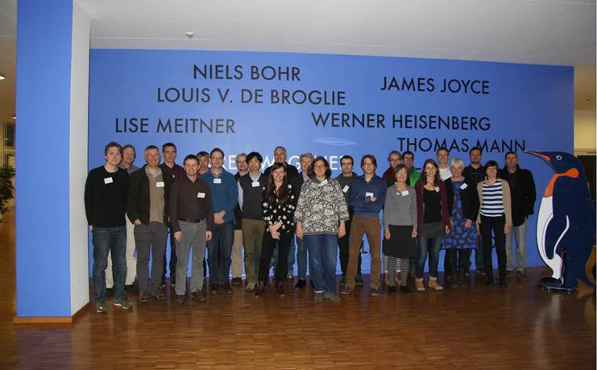

During the last several days, I have taken part in an international workshop to identify the major gaps in the scientific community's understanding of interactions between the Greenland Ice Sheet and its surrounding ocean.
The workshop on Greenland Ice Sheet-Ocean Interactions, under the acronym GROCE, was hosted by the Alfred Wegener Institute, in Bremerhaven, Germany. Over the two day meeting, ~28 scientists from Germany, Norway, the UK, Poland, Japan, Canada, the US and other countries framed the questions we considered most essential for understanding Greenland's rapid changes, as well as the strategies and resources necessary to respond to those questions. It was interesting and exciting to hear the commonalities and differences in research priorities from the broad cross section of glaciologists and oceanographers in attendance.
The report produced to summarize our workshop will be used to help guide funding agencies and the proposal efforts of the broader scientific community.
Next stop for me: San Francisco. The annual meeting of the American Geophysical Union starts there on Monday.

